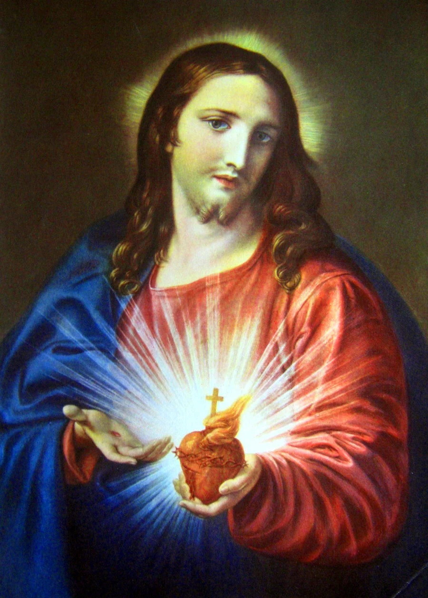

Primer viernes · Sagrado Corazón de Jesús
Misa cantada, exposición del Santísimo Sacramento y adoración en reparación al Sagrado Corazón de Jesús.

En Santiago
Habitualmente, el primer viernes se celebra una Misa cantada del Sagrado Corazón a las 19:00, seguida de la exposición del Santísimo Sacramento. Habitualmente se oyen confesiones durante la Misa.
Durante la exposición se rezan las letanías del Sagrado Corazón, el acto de reparación y el Santo Rosario. La iglesia permanece abierta para todos hasta medianoche.
Desde medianoche hasta aproximadamente las 7:00 del sábado, la adoración continúa solo para hombres, con inscripción previa. Para participar, comuníquese con los padres del Priorato.
Habitualmente, durante enero y febrero, la adoración termina a medianoche. Los horarios pueden cambiar: consulte el calendario semanal.
Los nueve primeros viernes
Esta práctica, difundida a partir de las revelaciones de Nuestro Señor a santa Margarita María de Alacoque, consiste en recibir la Sagrada Comunión, en estado de gracia y con intención reparadora, el primer viernes de nueve meses consecutivos.
La adoración y las oraciones de reparación acompañan esta devoción; su práctica central es la Comunión reparadora.
Entre las promesas del Sagrado Corazón se encuentra la llamada «Gran Promesa», vinculada a estos nueve primeros viernes y a la gracia de la perseverancia final.
- Las promesas del Sagrado Corazón de Jesús — PDF
Del R. P. Luiz C. Camargo. - Mes del Sagrado Corazón de Jesús — PDF
Extractado de los escritos de santa Margarita María de Alacoque.
En Viña del Mar
Habitualmente, el primer viernes se celebra una Misa cantada a las 19:00, seguida de la Hora Santa, en la capilla San José de los Ángeles.
Los horarios pueden cambiar. Consulte el calendario semanal.